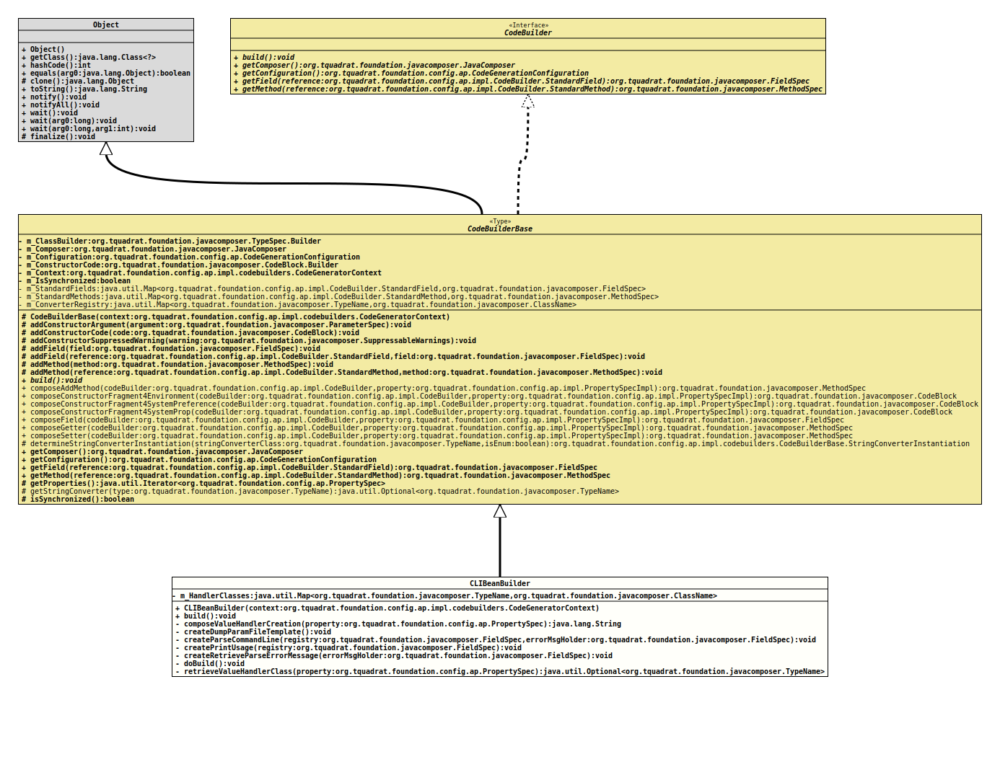

Class CLIBeanBuilder
java.lang.Object
org.tquadrat.foundation.config.ap.impl.codebuilders.CodeBuilderBase
org.tquadrat.foundation.config.ap.impl.codebuilders.CLIBeanBuilder
- All Implemented Interfaces:
CodeBuilder
@ClassVersion(sourceVersion="$Id: CLIBeanBuilder.java 1061 2023-09-25 16:32:43Z tquadrat $")
@API(status=MAINTAINED,
since="0.1.0")
public final class CLIBeanBuilder
extends CodeBuilderBase
The
code builder implementation
for the CLI stuff, as defined in
CLIBeanSpec.- Author:
- Thomas Thrien (thomas.thrien@tquadrat.org)
- Version:
- $Id: CLIBeanBuilder.java 1061 2023-09-25 16:32:43Z tquadrat $
- Since:
- 0.1.0
- UML Diagram
-

UML Diagram for "org.tquadrat.foundation.config.ap.impl.codebuilders.CLIBeanBuilder"
{kind=link}
-
Nested Class Summary
Nested classes/interfaces inherited from class org.tquadrat.foundation.config.ap.impl.codebuilders.CodeBuilderBase
CodeBuilderBase.StringConverterInstantiationNested classes/interfaces inherited from interface org.tquadrat.foundation.config.ap.impl.CodeBuilder
CodeBuilder.StandardField, CodeBuilder.StandardMethod -
Field Summary
FieldsModifier and TypeFieldDescriptionThe handler classes. -
Constructor Summary
ConstructorsConstructorDescriptionCLIBeanBuilder(CodeGeneratorContext context) Creates a new instance ofCLIBeanBuilder. -
Method Summary
Modifier and TypeMethodDescriptionfinal voidbuild()Generates the relevant code.private final StringcomposeValueHandlerCreation(PropertySpec property) Composes the code that creates the CLI value handler for the given property.private final voidCreates the implementation for the methodCLIBeanSpec.dumpParamFileTemplate(OutputStream).private final voidcreateParseCommandLine(FieldSpec registry, FieldSpec errorMsgHolder) Creates the implementation for the methodCLIBeanSpec.parseCommandLine(String[]).private final voidcreatePrintUsage(FieldSpec registry) Creates the implementation for the methodCLIBeanSpec.printUsage(OutputStream, CharSequence).private final voidcreateRetrieveParseErrorMessage(FieldSpec errorMsgHolder) Creates the implementation for the methodCLIBeanSpec.retrieveParseErrorMessage().private final voiddoBuild()Is called bybuild()to do the work – only if there is work to do …retrieveValueHandlerClass(PropertySpec property) Retrieves the class for the value handler for the given property.Methods inherited from class org.tquadrat.foundation.config.ap.impl.codebuilders.CodeBuilderBase
addConstructorArgument, addConstructorCode, addConstructorSuppressedWarning, addField, addField, addMethod, addMethod, composeAddMethod, composeConstructorFragment4Environment, composeConstructorFragment4SystemPreference, composeConstructorFragment4SystemProp, composeField, composeGetter, composeSetter, determineStringConverterInstantiation, getComposer, getConfiguration, getField, getMethod, getProperties, getStringConverter, isSynchronized
-
Field Details
-
m_HandlerClasses
The handler classes.
-
-
Constructor Details
-
CLIBeanBuilder
Creates a new instance ofCLIBeanBuilder.- Parameters:
context- The code generator context.
-
-
Method Details
-
build
Generates the relevant code.This method checks whether there are any properties that are either options or arguments, and does the build only when there is at least one.
Not building CLI stuff will let crash the compilation of the generated code, but this is intended: either the annotation for the CLI properties is missing, or the interface
CLIBeanSpecwas added to the configuration bean specification in error.- Specified by:
buildin interfaceCodeBuilder- Specified by:
buildin classCodeBuilderBase
-
composeValueHandlerCreation
Composes the code that creates the CLI value handler for the given property.- Parameters:
property- The property.- Returns:
- The name of the method that creates the CLI value handler for this property.
-
createDumpParamFileTemplate
Creates the implementation for the methodCLIBeanSpec.dumpParamFileTemplate(OutputStream). -
createParseCommandLine
Creates the implementation for the methodCLIBeanSpec.parseCommandLine(String[]).- Parameters:
registry- The registry of the properties that are exposed for the CLI.errorMsgHolder- The field for the parse errors.
-
createPrintUsage
Creates the implementation for the methodCLIBeanSpec.printUsage(OutputStream, CharSequence).- Parameters:
registry- The registry of the properties that are exposed for the CLI.
-
createRetrieveParseErrorMessage
Creates the implementation for the methodCLIBeanSpec.retrieveParseErrorMessage().- Parameters:
errorMsgHolder- The field for the parse errors.
-
doBuild
Is called bybuild()to do the work – only if there is work to do … -
retrieveValueHandlerClass
Retrieves the class for the value handler for the given property. If returning
Optional.empty()empty}, an instance ofSimpleCmdLineValueHandlermust be used that will be instantiated with theStringConverterretrieved by a call toPropertySpec.getStringConverterClass().- Parameters:
property- The property.- Returns:
- An instance of
Optionalthat holds the respective type name.
-